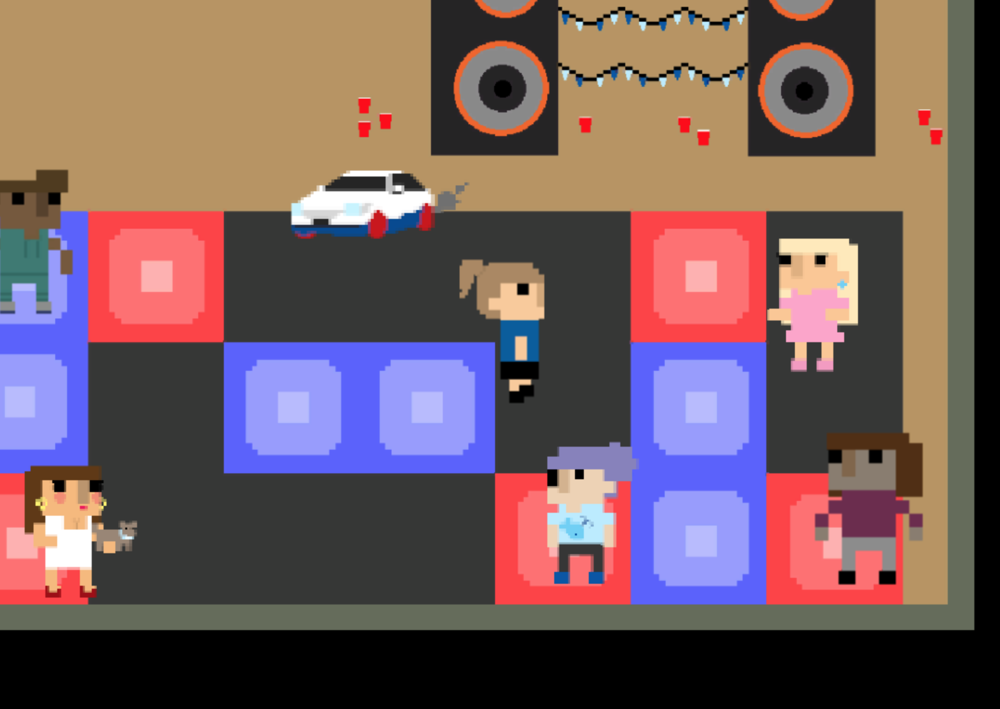

FELIPE DACAL FRAGOSO
Game Developer - Programmer - Teacher
Game Developer - Programmer - Teacher
A 30 years old, both brazilian and portuguese guy, who enjos to progamming and loves to make games and teach. Follow this path of teaching and make games almost for 10 years.
Moved to Denmark to do the masters in Games at ITU and hope ake his life in this nordic country.
In order to design a new kind of sport, is important to define what sport is, for this task is possible look for what the general understanding of this matter represent and is as “an activity involving physical exertion and skill in which an individual or team competes against another or others for entertainment“[1].
Furthermore is possible to say that sport is related to what Caillois defined in his book “Man, Play and Games”[2], when describe what he called as Agôn, where the game is balanced competitive and validates superiority offer an adversary and linked as well with the other definitions, Alea, Mimicry, Ilinx to generate a sport. In Alea with lucky or random as a key component, is possible came with Poker, that today is considered as a sport, with Mimicry is possible relate with a lot of group sports, like Soccer where the player can improvise to get the goal. To Ilinx all the extreme sports. Besides for the design of this new sport to us was relevant to get closer of “leg” concept than the “spil”, which could give more freedom to develop and to came with a sport in the our vision and understatement.
With all the first parameters set for the new sport, the Agõn and “Leg”, the next questioning was about differences between games and sports and how they can be related, when sports are games. To answer this question a research was made and one of the aspects revealed is that in sports we have some audience watching it, rules well defined and that cannot be broken, only changed, there is always some kind of social interaction, where in games we don't see some those kind of things with some frequency like in sports. So sports are games and games can be sports, depending always from the point of view, to help this is possible to notice with all those interest in e-sports increase rapidly in the last years, majority in western countries and how they are games faced like sports.
In fact to achieve the creation of this sport one important thing should be some kind of play field where is possible to have some spectatorship so the relationship with the game, became more sport and when Agôn is more evident, in a lot of sports the face of the match can change only because the support of the spectators. This is can be see with the spaces where the sport are set in and their features. With all those aspects the new sport came in first with some danish “leg”, and so with drink, some test was made with classmates, the feedback were really great, but still improvements were required.
All in all with the development process to create the sport is to close as create and design a game, both share a lot of common requirements and set of premises, like rules, mechanics, players, and others. Design a sport from scratch or even bending a existent sport is a task where is possible to learn how to create a game, because we must think the sport as a game, all the possibilities and how this influence every aspect of the game and the gamer experience and the playful.
References: [1] Oxford Dicitionary. https://en.oxforddictionaries.com/definition/sport. access on december 10th of 2016; [2] Caillois, Roger; Man, Play and Games; University of Illinois Press; 2001; English translation by Meyer Barash.
The definition of playground was necessary to perform this task and will be given as a group idea of a space where people can interact in some way with each other, so anything can be this space, besides the playground must have some contextualization, but there is no boundaries where the imagination is the limit to bring the playfulness in the maximum level possible, with this general concept is possible for a designer perspective elaborate that a playground is, a place where is possible establish and build some space for others to play.
Given the contextualization of what playground can be the next step should be the project of what we would like to do with this space where imagination is the limit and we can do whatever we want, the initial plan was create a playground that could work for older people and in a way of breaking down social barriers and make people interact with each other in spite of cultural differences and linguistic constraints, which respecting our vision of what a playground should be. In addition, we thought that the playground should figure as a kind of ‘playful space’ that you’d have to enter in order to get from a point in space to another point. To justify this is possible look at the modern society, especially scandinavian countries, where people tend to create these impenetrable personal space around themselves to sustain their individualistic and reluctant behaviour. If everything can be defined as a playground only limited from our imagination and playfulness, which brought us to our final idea, that in order to get adults to use our playground, the playground had to come to them.
To achieve this icebreaker inside a playful space and transform it into a playground a catalyst of a collective play activity is required for perform the project. With a crazy brainstorm, which was given by everyone a lot of words of what could be inside a fun and playful playground and was possible to serve as an icebreaker, from Penguins, Swings, Wheater, Games, Nothing and a lot of more words. After we picked some words and tried to create a space with this, first two swings connected where people need to talk each other and this after all brainstorm was transformed until we get the word, elevator. It was the key component to create our playground and with this main component we start to create the playground. With some projects made for marketing where people could connect with others around the world, like one where two doors with screens behind it, one in some city in europe and another in other place of the globe, when a person open the door connect with the other door. This, plus our main goal to create a social playground inside an elevator and a lot of new and great ideas we came with the elevator social. The person enter the elevator and connect with another elevator in somewhere in the world, one in Copenhagen another in Brazil, in Australia and so beyond. To perform the interaction between this to unknow fellows there is screens where people can draw, write, gestures, use the imagination to perform the connection and interactivity.
All in all the play experience anyone can make new friends, creating some form of ritual, where everyday in the same time those people will be in the elevator to connect with each other. Besides the interacting have some limits, like what is possible to do in a small place and in a limit amount of time, which is the time of an elevator ride. Is possible to create new forms of interaction between unknow people, can help anyone who just want a small time to get out from this personal space, or would be forced to do this and with this we can achieve our main goal to create a social plyground.
The key aspect to discuss about changing at least one aspect of a existent game in the market, transforming it and prototyping it, which can provide an further analysis and knowledge of game design. In this case the chosen game was the classic puzzle game “Mastermind”.
In Mastermind, the main goal is to find the right hidden sequence, this one given by a machine, if played in pc or mobile, or given by other player, if played in a board game, when the sequence is define the player must guess it in a limited number of tries, there is matches without any kind of limit that the player can try to guess, but in general we have ten tries to guess the right sequence. The sequence is made of four or five different colours, which is not repeated, unless the game get a higher level of difficult.
With this in mind, the group started to play and study the chosen game, so would be possible to understand all the rules and mechanics and so facilitate the adding component in the mechanics or any other playful aspect of the game. In the first attempt to change the mechanic, the key aspect was add more colors, so generating more possibilities from what sequence would be possible assemble, besides the colors different shapes were add to the game, which after some playtest was notice that this kind change just make the game harder and longer and could not be considered like a change after all.
However the next step was better than before, so to create create more challenging more players was added, in this new way each player should create an guess sequence so the other needs to guess each other sequence and who figure it out first would be the winner. In this point the mastermind became and turn puzzle based game. This new way of game was tested for a exhausted period, but some problems was shown. In almost all the matches the first player could guess first, so this was an advantage. Observed that more changes were needed to get the game work better and sure more tests, which the was solved adding one more player to the match, so the mastermind get in this point three players each round, with this is possible generate some social and strategic to win the game. Again we played a lot and tested this new way of mastermind, which shown working a lot better, but still with minor problems, like how to get more competitive, how let more difficult to guess the other player sequence. For those kind of answer and balance, we can add our first attempt to this one, with this we could achieve a major new feature in the way of play mastermind.
All in all it´s quite challenging to add or change features of a game, maybe harder to do it when the game have a good definition of its core design and mechanics. Making this “reverse engineer” from a consolidate game, with a great balance, core mechanics that work with playful and with the gamer experience could be a hard exercise of game design as well a great opportunity to try some new things and ideas of develop a game and at least create a new and totally different game, so this can contribute with innovations for the game industry as well for a learning process on how create and design games.
The central theme for this prototype was to make a “viking” game style, where there is only one loser[1]. Besides this the game should include some form of resource management, and should only enable a maximum of four players to play at a time. To perform this given task the concept of the political scenario in designer home country and even in some parts of the world allied with a trade card game concept was used. This enables to the player some kind of Alea[2], where the player need to count with some kind of lucky involved in the game.
What as intent to create inside the game was some cards with all mediatic politicians and who is involved in some corruption, scheme, or is a leader of somewhere in Brazil and in the world, besides this to create some major cases, like the NSA (National Security Agency of US) espionage of leaders from Germany, Brazil, Mexico and others, or like the major corruption scheme that is happening in this moment in Brazil. The goal of the game to attend the viking style game is to get one of the four players be impeachment, this would happen with points the first to get higher score lose. Every card have mana power to be used, in the same mechanic way of traditional trade card gaming.
The player can choose one side right wing or left wing, need to build his or her deck with forty card can use center wing cards, all the cards provide politicians who can attack directly the opponent, working similar as creatures in magic trade card game, besides this the player can use a lot of different card types, such as traps, cards that add impeachment points in any time and so beyond. To provide some base of resource management system, every player have some impeachment points, that determines when the player lose, but with the “corruption, money, allied politicians, press and buildings” the player can use some cards or habilites from the cards where is possible to reduce the impeachment points and avoid to be defeated by the other players or even to help defeat another player. Some tests were made with trade card gaming players and this management system need improvements, probably some simple equations that helps the elements to increase or decrease the impeachment points and the cards can give this habilit to the players.
However with all the cards created in the moment and the system used to balance the game is possible to play and the comic relief with some jokes about the politicians and the criticism with all that is wrong in the politician and the bad politician and economy struggle Brazil suffers in this moment because the corruption. Create such game first give me the possibility to make this kind of criticism and the possibility to create a trade card game different from the others because the management system and the criteria where only one must lose the game.
References:
[1] Miguel Sicart, Game Design Challenge #2, https://learnit.itu.dk/pluginfile.php/163381/mod_resource/content/1/Protoype3.pdf (Accessed December 11th), 2016.
Click HERE to Play! * wait to load the webgl unity plugin

The central theme for it would be the final design challenge that consist in create the main loop of the mechanics and playful of what would be the final game. To create a loop, it is important to know and understand what a loop is, as well as what game mechanics are.

About the mechanics is possible affirm that is all the actions that player and the avatar inside the game are able to do, respecting the game rules given for the game world, but is possible the exploration through various cues in the game[1]. For game loops, main loop is a graphical way to show the repeated actions within a game. The main loop defines the primary actions which have to be performed to progress and complete the main goal of a game[2].
The main loop of our game shows how the player can interact with the NPCs (Non playable characters) and the way to explore the world. The player walks around the space to explore it, enabling to meet and perform the required activity with those NPCs. In the second step of the game play the player press some key so it is possible to interact with the NPC. In this moment the player need to make a choice, and choosing the reactions of the avatar while waiting for some response.

To test the main loop, the group create an analog prototype. Testing the main loop, through an analog prototype, enabled testers to get a sensation of the core experience of the game. This generated valuable feedback from the playtesters, indicating that the loop was successful at providing the intended gameplay experience. After this step it was decided to change the game from a single player to a local multiplayer to improve the gamer experience and achieve what we intended of our game.


Use this area of the page to describe your project. The icon above is part of a free icon set by Flat Icons. On their website, you can download their free set with 16 icons, or you can purchase the entire set with 146 icons for only $12!